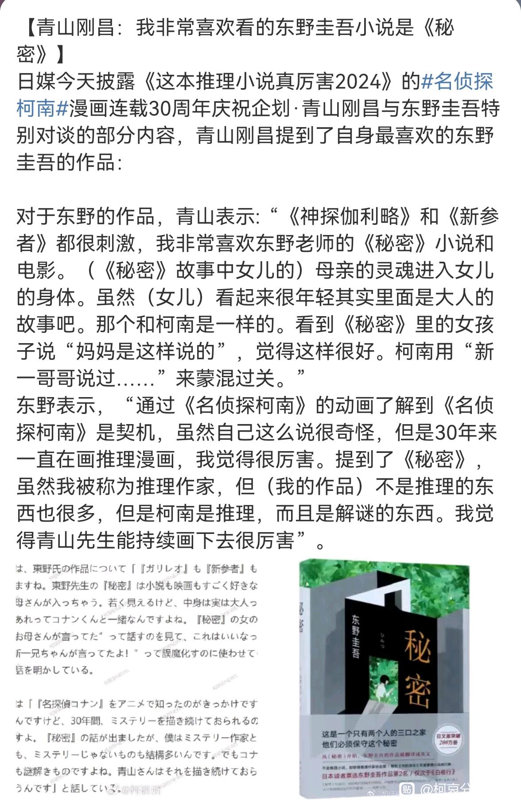

《秘密》的故事核心就是伦理与选择。在这个故事中，夫妻是唯一共享秘密的双方，却因为妻子的灵魂被困于女儿的躯壳中而无法走到一起。随着女儿身体的长大，夫妻差点突破伦理的界限，最后还是选择放手，妻子伪装女儿灵魂回归，最终骗过丈夫与其他【同龄人】结婚。但丈夫最终还是发现了真相。
73没有被东野圭吾更为热门的《白夜行》和《嫌疑人x的献身》所触动，转而选择了《秘密》，证明他本质就被这种【共享秘密却爱而不得】的内核所吸引。尽管《白夜行》也有这种此种特质，但男女主是有明显的利用和被利用成分的，而《秘密》的男女主确是彼此为对方牺牲，精神境界要高尚得多。
此外，《秘密》带有明显的伦理禁忌倾向，彼此那种欲说还休，想触碰却不敢的描写非常吸引人，这也进一步反映出73本人对于这种【试探性触碰】的本能喜好，而在m26里能明显感受出类似的张力。
总而言之，73此次的选择再一次印证我一个观点，即没有推理爱好者会喜欢直白的感情叙述的，微妙感、禁忌感才是他们的灵感来源。
73没有被东野圭吾更为热门的《白夜行》和《嫌疑人x的献身》所触动，转而选择了《秘密》，证明他本质就被这种【共享秘密却爱而不得】的内核所吸引。尽管《白夜行》也有这种此种特质，但男女主是有明显的利用和被利用成分的，而《秘密》的男女主确是彼此为对方牺牲，精神境界要高尚得多。
此外，《秘密》带有明显的伦理禁忌倾向，彼此那种欲说还休，想触碰却不敢的描写非常吸引人，这也进一步反映出73本人对于这种【试探性触碰】的本能喜好，而在m26里能明显感受出类似的张力。
总而言之，73此次的选择再一次印证我一个观点，即没有推理爱好者会喜欢直白的感情叙述的，微妙感、禁忌感才是他们的灵感来源。

我感觉秘密的伦理也挺抽象（霓虹基操）
要真的尊重一个可能回归的女儿的灵魂就该保持单身，至少消极无过（
要么就豁出去算了（
要真的尊重一个可能回归的女儿的灵魂就该保持单身，至少消极无过（
要么就豁出去算了（
2023-11-30 04:43 | 九九玉生烟:讲的就是这份扭曲感，如果直接放下，也就没有那种感觉了
秘密里的伦理禁忌感确实狗血又扭曲，73会选这一本，至少说明他并不偏好温馨纯爱，不然怎么说他也应该选个《流星之绊》之类的堪比偶像剧的浪漫爱情故事吧。
2023-11-30 05:34 | 九九玉生烟:他确实不爱，而且看得出他并不喜欢单恋，更喜欢彼此爱慕而不自知

搞点新哀吧你说呢73
2023-11-30 05:34 | 九九玉生烟:说出大家心声

这在暗示些什么…
2023-11-30 05:35 | 九九玉生烟:暗示现在的都是小菜一碟，不够带劲
难怪想来点新哀戏是吧
2023-11-30 05:35 | 九九玉生烟:谁不想

2023-11-30 05:35 | 九九玉生烟:
某种意义上也能解释为什么青山就不让sr分手的原因
ca的背德感就在于sr是明面上的情侣，少了兰就缺乏了那种两个人变小后一起瞒着某个人的共犯感，类比海老藏篇两个人合伙逗兰那段
而兰在这段关系里就类似女儿嫁给的普通路人甲，属于一种上buff的调情道具
ca的背德感就在于sr是明面上的情侣，少了兰就缺乏了那种两个人变小后一起瞒着某个人的共犯感，类比海老藏篇两个人合伙逗兰那段
而兰在这段关系里就类似女儿嫁给的普通路人甲，属于一种上buff的调情道具
2023-11-30 05:37 | 九九玉生烟:是的，你看他对哀还吻那段津津乐道就知道了。明明彼此有意，就是要刹住车，特别像夫妻中后期那段2023-11-30 08:22 | 咪西咪瓜仙人:回复 九九玉生烟 :omg那最后会不会也像秘密里一样爱而不得2023-11-30 08:59 | 别XB乱叫☜:回复 咪西咪瓜仙人 :对柯哀要有信心哦，毕竟柯哀不是“秘密”2023-11-30 09:27 | 乔迟遇ლ:回复 咪西咪瓜仙人 :73实锤的推理恋爱喜剧2023-11-30 11:34 | 第7个伯言:既然是推理作品，那么秘密终有一天会被揭露出来


想不到他选了这本
2023-11-30 05:38 | 九九玉生烟:所以更可以立体地分析73的心理历程了
这个片其实还行，伦理问题还挺吸引人的，最后这个妈妈假装女儿回来了，结婚了，但是不知道妈妈是不是真心喜欢后来这个结婚的人
2023-11-30 05:39 | 九九玉生烟:假装的啊，有一半也是代替女儿体验人生了2023-11-30 05:39 | 小韭菜123_:2023-11-30 05:40 | 九九玉生烟:回复 小韭菜123_ :妈妈也很难的，代替女儿追求幸福，但并非出自本意2023-11-30 05:47 | 小韭菜123_:回复 九九玉生烟 :妈妈确实也是没办法，毕竟真的就只有他们两个人知道，外界视角是毫无争议的父女，她在外人需要一直扮女儿，而且也不能跟男主发生禁忌，最终也只能这么选择了，开启新的人生2023-11-30 05:54 | 茶茶鲸丷🌰:回复 九九玉生烟 :假装喜欢后来结婚的这个人吗2023-11-30 05:55 | 茶茶鲸丷🌰:回复 小韭菜123_ :我理解这个妈妈，也觉得她的做法是对的，就是有点在意这个妈妈喜不喜欢后来结婚了的这个男的2023-11-30 05:55 | 九九玉生烟:回复 茶茶鲸丷🌰 :至于有没有真正喜欢后面那个人就不知道了，也没法知道2023-11-30 06:01 | 小韭菜123_:回复 茶茶鲸丷🌰 :这个作者就没写了，毕竟妈妈决定彻底装女儿之后，就算是跟男主告别了。她最后也不知道男主其实已经知道真相了，最后在妈妈的视角来看，男主是不知情的，把她完全当成女儿了。

搞点柯志更好，比如志保一把扛起柯南往外冲
2023-11-30 05:40 | 九九玉生烟:大姐姐的诱惑是吧2023-11-30 10:49 | 露滴💧7532:想看开大车2023-12-05 22:46 | 贴吧用户_aZNUXXG:画面感十足。。。
东野圭吾的小说我只看过白夜行 解忧杂货店和嫌疑人X的献身，没看过秘密。没想到青山喜欢这本，这我得好好看看了
2023-11-30 05:42 | 九九玉生烟:广末凉子那个版本的电影蛮好看的2023-11-30 06:28 | 2014只蝴蝶飞过:回复 九九玉生烟 :我看的都是小说，没看剧
秘密的结局感觉也只能这么写了。妈妈一开始肉体就没了，女儿灵魂没了，永远都只能是妈妈的灵魂+女儿的肉体这样存在。
在外人视角男主跟女儿就是正常的父女，所有人都这么觉得，你要是说那个是妈妈也没人会信
总不能真的搞禁忌吧，所以只能是这样的结局了。
妈妈也只能这样选择了，她不管怎么样都不可能回到妈妈的身份的，始终是女儿的肉体，也只能这样选了。
2023-11-30 06:00 | 九九玉生烟:而且片子后半截也揭示了母亲作为女儿只能按照女儿的生活轨迹活着，她逐渐有自己的生活圈和交际圈，丈夫一直幻想的一家三口永远在一起的情况根本不可能发生。最后母亲是不是对女儿的人生乐在其中也不得而知。这种扭曲感在你柯身上已经很能体现出了。
我的感觉是妈妈的灵魂女儿的身体对应的是柯子的身体新一的灵魂，所以这个“丈夫”的角色有没有可能是小兰？新一/柯南最后没法变大，只能解除冻龄，就跟女儿的灵魂不再，而住着妈妈灵魂的小孩子身体会慢慢长大，让妈妈重新过一次新的人生，然后和另一个“同龄”的人结婚，这个人可能是小哀？所以我还蛮在意妈妈最后喜不喜欢后来结婚的这个小哥而且我甚至觉得最后会告诉小兰柯南就是新一，只不过无法变大只能慢慢长大，然后两个人分别有自己的社交圈子，并最终因为大人小孩身体的差异无法继续相处，柯子就选择离开，和少侦小哀一起生活长大结婚，不知道有没有可能…
而且我甚至觉得最后会告诉小兰柯南就是新一，只不过无法变大只能慢慢长大，然后两个人分别有自己的社交圈子，并最终因为大人小孩身体的差异无法继续相处，柯子就选择离开，和少侦小哀一起生活长大结婚，不知道有没有可能…2023-11-30 06:35 | 九九玉生烟:不能直接对应的，sr之间根本没有共享秘密，兰姐的视角里不存在彼此奉献，妻子后期的行为确实和柯目前的状况很像，但兰姐和丈夫却完全不对称，她的视角里可没有禁忌约束，反而哀是有明显的道德约束感的2023-11-30 06:40 | 茶茶鲸丷🌰:也是也是，确实是这样的2023-11-30 06:49 | ◆闇◆之◆光:我觉得原本是不是真喜欢不重要吧，如果老贼有这种意向那肯定要改改的算二创了，就像福艾一个道理一样。即使原本不存在真正的爱情之类，老贼不一定会硬套模版。所以也没有必要去觉得老贼一定去一比一复刻过来。要不然你直接去看原作不就好了，好歹老贼也是个有想法的创造者2023-11-30 07:05 | 茶茶鲸丷🌰:回复 ◆闇◆之◆光 :也是，确实不能照搬硬套2023-11-30 10:50 | 露滴💧7532:他只是喜欢这本书，又不代表柯南的剧情走向会跟这书一致2023-11-30 12:04 | 辣舞西弟:sr之间没有道德禁忌，这小说里女儿最后的配偶没有扭转现状的能力和义务，而且也是单方面蒙在鼓里的2023-11-30 12:12 | 辣舞西弟:而且如果企图用“黑组”作为外在因素代换伦理道德来约束新兰，问题是“黑组”并没能影响新兰情感表达。新兰隔阂的根本原因是自身不契合，差异非常明显。2023-11-30 13:25 | 不羡佐鸣:柯子的现状可能“长不大了”😂……他从变成柯南的半年多里，没长高一点。柯还问哀是不是也这样，但哀答非所问、隐藏了想法。这个A药副作用的伏笔，究竟是指“必须变回新一”，还是“解药最后只能长个、变不回去了”，还不够明确，不过后者概率更小些😭2024-01-10 21:28 | emo0-:重点难道不是“共享秘密”吗
确实虽然爸爸妈妈女儿和最后结婚的路人甲乍一看仿佛能套成妈妈(柯)爸爸(兰)女儿(新)路人甲(哀)，但是只套这个壳就太没意思了，重要的是看爸爸妈妈之间那种禁忌感体现在了谁身上，很明显是柯哀新志
青山有这个鉴赏水平就证明他在创作时多多少少会受到这些作品的影响
虽然爸爸妈妈女儿和最后结婚的路人甲乍一看仿佛能套成妈妈(柯)爸爸(兰)女儿(新)路人甲(哀)，但是只套这个壳就太没意思了，重要的是看爸爸妈妈之间那种禁忌感体现在了谁身上，很明显是柯哀新志青山有这个鉴赏水平就证明他在创作时多多少少会受到这些作品的影响
2023-11-30 07:38 | 九九玉生烟:他早年的短篇作品都还蛮享受这种略带虐的过程的
分析的太对了！如果我是一位作家，我真心推的CP迟迟没有在一起，另一被我伪装的CP却各种直来直去，那么只有一种可能了，我享受这种感觉。
你们还记不记得青山青口说过：小哀是以兰的心情看柯南。
这么一想这种禁感又拉扯起来了！
你们还记不记得青山青口说过：小哀是以兰的心情看柯南。
这么一想这种禁感又拉扯起来了！
2023-11-30 07:37 | 九九玉生烟:啊？说过吗？2023-11-30 08:07 | nusuaihxi:回复 九九玉生烟 :就是那个带入兰的心情在心里说新一那个2023-11-30 13:32 | 不羡佐鸣:回复 九九玉生烟 :M26收官庆功宴之类的发布会里，对于哀拿着水杯看柯南跑远时的内心OS，“新一君，你还真是总让人等待呢”，73解读说哀的这一句台词，是因为“共情/代入了兰的心情（笑）”
現在越看毛利蘭越覺得她是工具人，新蘭戀愛劇情就很標準的臉紅吃醋，一點拉扯感都沒有，新蘭粉竟然還能認為基德是他們之間的情趣play，屬於把屎當糖磕，
2023-11-30 07:49 | 九九玉生烟:sr普遍没有传统文学素养，脑子里除了白纸一样的初恋纯爱，还是初恋纯爱。73现在明目张胆把牛头人代餐剧情写到本篇里了，还能当糖磕简直匪夷所思，证明他们没有基本的思考和辨别能力。2023-11-30 08:02 | 世界上没有真理:回复 绿色小米粒儿 :你是不是會錯意了？青山式的戀愛喜劇跟搞不搞純愛沒有關係，是要有拉扯感，感情戲寫的太直白不是好事，青山的柯哀二十幾年過去依舊大受歡迎，柯哀劇情描寫上可說是相當隱晦，但仍不妨礙大家磕生磕死，你猜是為什麼？2023-11-30 08:05 | 贴吧用户_QSJ9y3J:回复 绿色小米粒儿 :这就是已经被无数前辈验证过的成功写法 不是搞不搞纯爱的问题 移情这条路就是这么走的2023-11-30 08:05 | 世界上没有真理:回复 九九玉生烟 :沒錯！每次看到她們發言都會覺得很神奇，看劇情都只看表面無法思考更深層的內核，就像九九大說的就是文學素養太低，缺乏思考能力2023-11-30 08:58 | 世界上没有真理:回复 Pumpkim :破防了喔?他也沒說什麼，你這麼玻璃心幹嗎?2023-11-30 08:58 | 世界上没有真理:回复 Pumpkim :破防了喔?他也沒說什麼，你這麼玻璃心幹嗎?2023-11-30 19:23 | mangomengke07:回复 Pumpkim :文学素养果然低到吓人，连移情都不知道。你以为移情=移情别恋哪…
所以我真的可以期待新哀了吧！新哀很有看头的！
2024-01-07 00:04 | 贴吧用户_5EPSKyJ:说的我都开始期待了！！
所以不要再说青山喜欢纯爱了…
就喜欢这股禁忌感
啊好像看过这个电影，广末凉子演的女主角来着
73真的很爱这种拉扯类文学，看的过程中也会用到自己的作品里，这也正好符合柯哀的现状，哪对是他真的想画的能感受到
毕竟单纯男女谈恋爱有什么好看的 满大街都是
蹲99
2023-11-30 22:27 | Leo_Bayern:先蹲再看
 光看你简述就觉得有丢丢无法接受这样的剧情。。
光看你简述就觉得有丢丢无法接受这样的剧情。。还是希望能把柯哀走向正轨，禁忌之恋我也很爱看，但是跟柯哀这种情感隐晦细腻但双方性格都很坦荡的调性不符
2023-12-01 03:48 | 九九玉生烟:这种禁忌感与个性无关，只与境遇有关。无论怎样强调光明磊落，事实就是彼此的处境与因缘际会创造了这种禁忌感。恰如金庸笔下的主角总会爱上魔教圣女，这并不影响大侠依然光明磊落，魔女依然落落大方，但这种关系就是禁忌的。2023-12-04 04:33 | 绝对小孩Q_Q:正是因为柯哀双方都是坦坦荡荡的君子性格，这种拉扯感才显得格外带感。“思维是可以被控制的，但感情不可以，无论再怎么抑制或装傻，都没有办法斩断二人之间幽然生出的新芽”，这才是柯哀拉扯感的精髓啊…
二刷《秘密》和青山一样最喜欢这部😋
狠狠期待新哀
超喜欢的两个作家啊哈哈～
央视：柯哀是战友情，这是道德问题，青山老师不会犯这种错
青山：我非常喜欢《秘密》
看来凡是SR总会吃回旋镖的，ys也不会例外
青山：我非常喜欢《秘密》
看来凡是SR总会吃回旋镖的，ys也不会例外
2023-12-02 07:49 | 九九玉生烟:六公公不是ys的，是外包的，最近翻车不要不要的，已经毫无信誉可言了
秘密真的很好看 当初给了年幼的我一些震撼 73真是有品
woc 佬
沒看過這本書不過可以理解為73絕對不是純愛戰士
我看到一篇書評寫說他認為的真相是從頭到尾都是有戀父情結的女兒假扮媽媽，媽媽靈魂根本不存在的說法 不過我沒看過不好評價姑且不論真相如何但可以確定這種拉扯糾結感73真的很愛
不過我沒看過不好評價姑且不論真相如何但可以確定這種拉扯糾結感73真的很愛
不管是鐵達尼號還是新海誠(青山在《你的名字》還沒出來前就很喜歡新海誠的作品而且說如果他改做HE一定會爆紅，而且新海誠也算是姐弟戀控),都是男女主雙箭頭悲戀BE感拉滿的類型，前期SR跟CA可能都還算符合這種要件，現在還能維持這種狀態的就是CA了(還好73本人是HE派的)
我看到一篇書評寫說他認為的真相是從頭到尾都是有戀父情結的女兒假扮媽媽，媽媽靈魂根本不存在的說法
不過我沒看過不好評價姑且不論真相如何但可以確定這種拉扯糾結感73真的很愛不管是鐵達尼號還是新海誠(青山在《你的名字》還沒出來前就很喜歡新海誠的作品而且說如果他改做HE一定會爆紅，而且新海誠也算是姐弟戀控),都是男女主雙箭頭悲戀BE感拉滿的類型，前期SR跟CA可能都還算符合這種要件，現在還能維持這種狀態的就是CA了(還好73本人是HE派的)
2023-12-02 19:49 | 九九玉生烟:我认为73对纯爱的理解是指内心，而非形式，他喜欢充满各种阻碍但依然坚守初衷的情感，很符合日本文学一直以来宣扬的【我爱的是你这个人本人，跟性别出身身份无关】的思想2023-12-03 00:48 | Yao_CPT:回复 九九玉生烟 :啊啊對的 內心還是相當純愛，形式不是只有表面上看到的那樣
至少可以打破柯南是“纯爱”漫画这一洗脑包
所以说微博上的云能不能看看访谈看看漫画，我从一开始就知道73根本就没搞纯爱，搞个毛线的纯爱啊。还一天天的自己纯爱CP没了，大哥大姐们你们要是纯爱，从35集绷带怪人事件小兰和一个帅哥去约会被新一吃醋的时候就不是纯爱了。
很喜欢up分析的这点！插个题，我在分析文发过一个关于鲨鱼论的贴（https://tieba.baidu.com/p/8686130640）和up的想法我觉得不谋而合。简单说，我觉得柯哀的关系有一种禁忌感，虽然这可能有些争议。但是客观上，柯哀展现的是成人的爱情，但却是以小孩的身份。这是很“可怕”的一件事。我们经常说柯哀的片段如果代入新志将过于炸裂，而这其实也是这种禁忌感的来源，虽然柯哀二人可能对这种禁忌感都不自知（至少表现得不自知），但是对彼此的关心与在意已超出了界限。“秘密”里的禁忌感来自于女儿和妻子同身体，但是这种“禁忌到背德”并不apply到柯哀，因为柯哀都从大人到小孩，他们是公平的；他们过去同龄现在也同龄。神奇的是随着变成小孩，他们仿佛就可以像小孩一样可以自然而然的做一些成人看来非常炸裂的情节，比如直接戴眼镜，戴耳机，抱着滑雪等等。这一刻我们仿佛忘记了他们实质上是大人。所以我也觉得老贼喜欢“秘密”是有原因的。
2023-12-06 03:42 | 姚中明11:老贼肯定是喜欢这种“禁忌”感的，他的cp脑回路绝对不是那种很“正派”的漫画家2024-01-07 00:14 | 一杯雪莉酒º:写的真好
最后会不会也让角解因为新一说出了某些只有柯南和她才知道的事情而彻底识破真相，或者再加上角解亲自看到有人吃药变小之类的画面，这样的话一向被外界讽刺不懂推理的女主角最后通过自己的推理思考明白了新一的苦衷，于是主动提了分手
2024-01-07 01:13 | Yao_CPT:不會，若mll能說出只有柯新知道的事情還極有份量的話那她現在就不會這樣了。而且現在她根本不希望柯就是新
你的两点推测都可以被证伪:一个是新变成柯的第一时间毛利兰就没有发现他变小的事实，后面几次童年回忆更是被73反复强调双方脑回路的差异，根本不存在共享秘密的可能；二是药物现在已经中断开fa了，组织自己有药的人都很少，更不可能存在被兰姐直击的可能，她要是能看到早玩蛋了。这些推测都是毫无根据的。
楼主的分析太赞咧，这也能解释好多新兰糖都带点柯哀的原因，新兰和柯哀两者互为光影，比如伦敦篇明明是新兰重要篇章，最后却安排哀联系有希子送药，直接把有希子好感度拉满，要的就是暗戳戳不明写的同罪感。
2024-01-07 06:19 | 九九玉生烟:喜欢【同罪感】这个说法
我悟了！！就像另外一个问题，如何让一个裸体的人更裸？答案是穿上袜子。那如何让两个相爱的人更相爱？答案就是让他们克制！！毛利兰就是那双“袜子”！
2024-01-07 08:56 | 九九玉生烟:你的比喻也让我悟了
几乎所有擅长描写情感的作家，都偏向描写带有“克制”“禁忌”的关系，不论是写喜剧还是悲剧，这种关系才有张力，才能体现角色的立体，带出作家的所思所想，平铺直叙的“纯甜”感情戏在jj小言频道都不是最受欢迎的了
2024-01-07 09:00 | 九九玉生烟:甜宠本来就是爱情最低级的表现手法，而克制与禁忌感之于爱情更像是甜品的最高境界【没那么甜】的效果。
新哀就挺禁忌的 ，换成新志就大胆了
，换成新志就大胆了
，换成新志就大胆了秘密那故事，也是比较刺激的了
从73的喜好入手的思路不戳诶